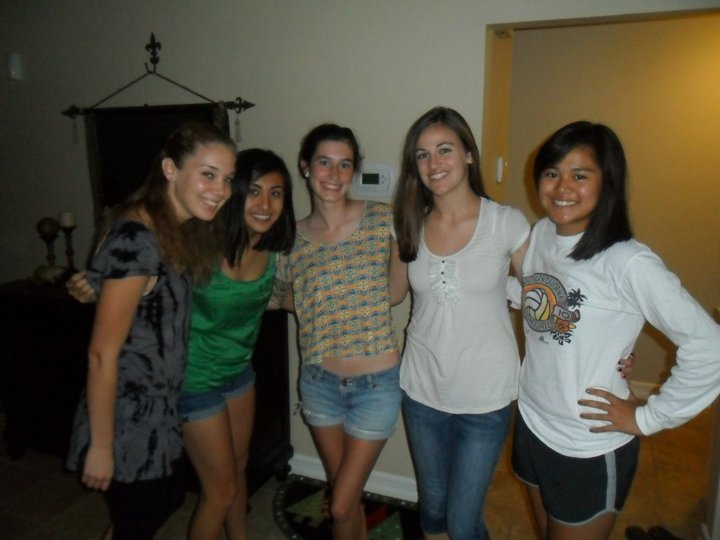
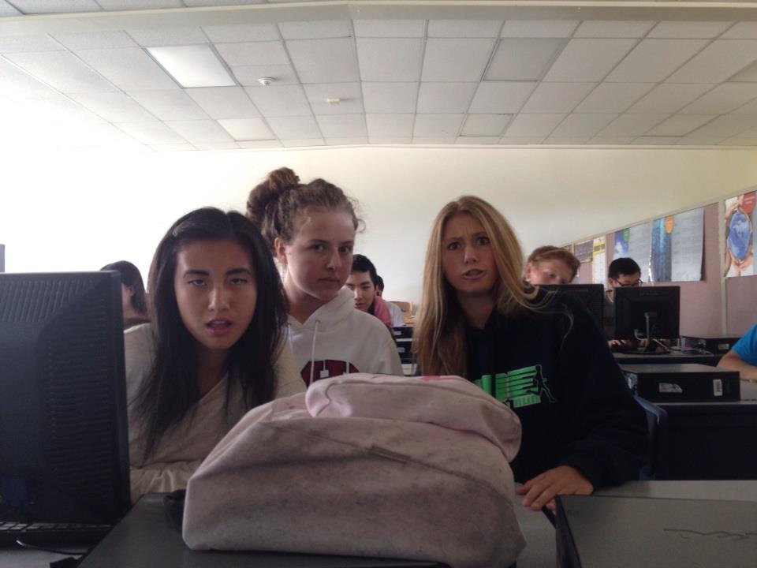

I grew up in Newbury Park, California. My dad and sister still live there, so I visit a couple times a year.
Newbury Park will always be special to me because it's where I experienced all the first real challenges,
disappointments, and heartbreaks in my life, and overcame them.

My best friends in Newbury Park were the ones I did sports with. I loved running and playing lacrosse,
and these hobbies brought me really close with my teammates. I think sports were very formative for me
because I was forced to learn that sometimes, no matter how hard I tried at something, I might not always
be the best at it.

I took a lot of math and science classes in high school, but I was too focused on getting
good grades to get the full experience out of my classes. I wish I could go back and try harder
to understand why math and science was important outside of the context of getting accepted
into college.